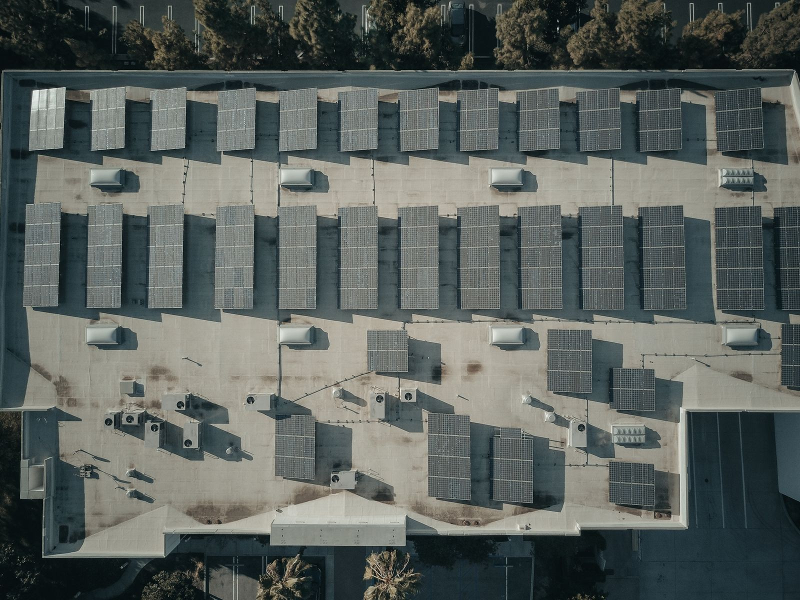

O sol faz parte de casa.
Uma apresentação clara de como a geração solar pode se integrar à rotina de um imóvel residencial.
Explore possibilidades de energia solar para sua casa ou empresa. Uma ideia de site para tornar decisões complexas mais claras.
Conheça as possibilidades Design demonstrativo. Nenhuma empresa ou instalação real é apresentada.
O projeto de um sistema depende do consumo, das características do imóvel e da avaliação técnica.
Uma apresentação clara de como a geração solar pode se integrar à rotina de um imóvel residencial.
Informações para explorar cenários de consumo e necessidades de diferentes atividades.
Consumo, área disponível e condições locais ajudam a orientar uma avaliação específica.
Conhecer as possibilidades é o primeiro passo para avaliar uma solução adequada ao seu contexto.
Uma fonte renovável que pode fazer parte da estratégia de energia do imóvel.
Uma oportunidade para entender o uso de energia e comparar cenários.
Uma análise técnica e financeira é necessária para avaliar a viabilidade.
Simule uma redução hipotética sobre um valor mensal. Este exemplo não calcula a produção de um sistema solar.
O resultado aparece aqui após o cálculo. Não é uma proposta nem uma promessa de economia real.
Não. É um projeto conceito da Nodrah para demonstrar design, navegação e interação. Não representa uma prestadora de serviços.
Não. Ela aplica um percentual hipotético a um valor mensal. Não dimensiona um sistema e não substitui uma avaliação técnica ou financeira.
Histórico de consumo, características do imóvel, área disponível e condições locais são pontos de partida para uma análise profissional.